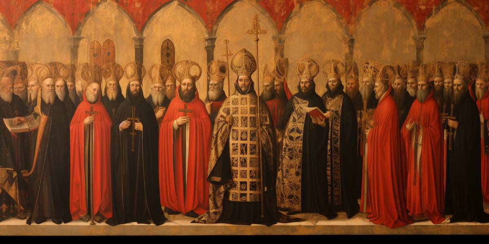
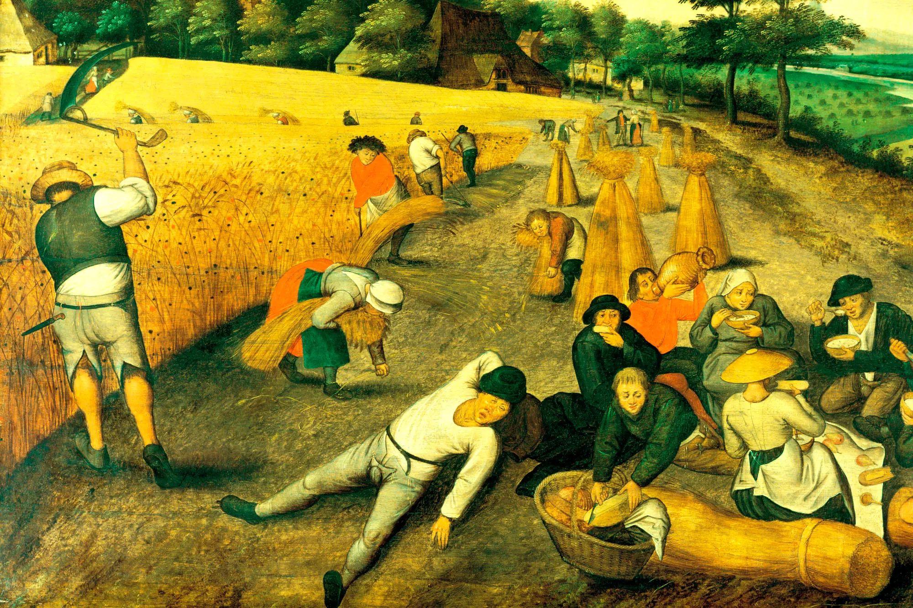

Absolutism refers to a political doctrine and form of government in which a single ruler, typically a monarch, holds absolute and centralized power over the state and its people. In an absolutist system, the ruler's authority is not restricted by any constitutional laws, legislative bodies, or other political institutions. Instead, the monarch possesses unchecked control, often justified by the belief in the "divine right of kings," which asserts that the monarch's power is granted directly by God, making the ruler answerable only to divine authority. This form of governance was common in Europe during the 16th to 18th centuries, where monarchs sought to consolidate power and diminish the influence of the nobility, clergy, and other social groups.
One of the most notable examples of absolutism in practice is the reign of Louis XIV of France, often referred to as the "Sun King." Louis XIV ruled France from 1643 to 1715 and is considered the epitome of an absolute monarch. His famous declaration, "L'État, c'est moi" ("I am the state"), encapsulates the essence of his belief in absolute power. Under Louis XIV, France saw the consolidation of royal authority and the weakening of traditional power holders, such as the nobility and the regional parliaments. He centralized decision-making in the hands of the monarchy and established a highly efficient administrative system that allowed him to control every aspect of French governance, including taxation, law, and military matters. Louis XIV also expanded the power of the state by building a strong standing army and by engaging in a series of wars to extend France's territorial influence in Europe. His reign is also associated with the opulent construction of the Palace of Versailles, which became both a symbol of his power and a tool to control the French aristocracy by keeping them under his watchful eye.
Learning about absolutism is essential for understanding the development of modern political systems, particularly the shift from centralized, monarchal power to constitutional democracies. Absolutism in Europe, especially during the reign of rulers like Louis XIV of France, laid the groundwork for many of the struggles between monarchy and emerging democratic principles. For instance, Louis XIV’s absolute rule, consolidated under the belief of the divine right of kings, shows how unchecked power can influence governance and the role of the state in society. The study of absolutism illustrates how centralized power can both provide stability and foster dissent, as seen later in the French Revolution, where the public rejected absolute monarchy in favor of a republic. By understanding absolutism, we can gain insights into how modern democratic principles, such as separation of powers and checks and balances, evolved as a response to monarchal control.
Another important reason to study absolutism is its direct influence on European expansion and colonialism. Absolutist monarchs like Philip II of Spain wielded immense power over their nations’ resources, allowing them to fund and support large-scale exploration and colonization efforts in the Americas, Africa, and Asia. For instance, Spain’s expansion into the New World was supported by its centralized monarchal authority, leading to the establishment of vast colonial empires that reshaped global politics and economies. The resources extracted from colonies further empowered absolute monarchs, solidifying their control. Understanding the connection between absolutist power and European colonialism helps explain the global impact of these systems, as well as the long-term consequences of colonialism, such as economic inequality and cultural upheaval, that continue to affect many parts of the world today.
Studying absolutism also offers important lessons about the dangers and potential consequences of centralized, unchecked power. Absolutist regimes often led to the suppression of dissent, the marginalization of opposition groups, and the restriction of civil liberties. For example, Tsar Peter the Great of Russia exemplified absolutism by consolidating his power through brutal means, including forced modernization and severe punishments for those who resisted his reforms. While his rule resulted in significant military and territorial gains for Russia, it also led to widespread suffering among the population due to forced labor and high taxes. The fall of absolutist regimes, such as the overthrow of King Louis XVI during the French Revolution, demonstrates the fragility of systems that ignore the will and needs of the people. By studying absolutism, we gain a greater appreciation for the importance of political balance, citizen participation, and accountability in governance, which are crucial for avoiding the pitfalls of authoritarian rule.
In the political system of absolutism, monarchs sought to centralize power entirely within their own hands, often based on the concept of the "divine right of kings." This belief held that monarchs were chosen by God to rule and were accountable only to divine authority, not to their subjects or any form of legislative body. This idea was prominently seen in France under Louis XIV, often referred to as the quintessential example of an absolute monarch. Louis famously declared, "L'État, c'est moi" ("I am the state"), illustrating the extent to which he viewed himself as the embodiment of France itself. During his reign, Louis XIV curtailed the power of the nobility by forcing them to live at the Palace of Versailles, where he could closely monitor and control them. He also diminished the influence of the Estates-General, effectively ruling without the need for their approval. His reign represents the epitome of centralized monarchal authority in European history.
Absolutist rulers sought to maintain control by developing sophisticated bureaucracies that would enforce their will and manage the administration of their territories. These bureaucracies were usually composed of loyal, often non-noble officials who owed their positions directly to the king, ensuring loyalty. For instance, in Prussia, Frederick William, known as the "Great Elector," consolidated his power by creating a strong centralized administration that could efficiently collect taxes and maintain a large standing army. He reduced the power of the local estates, which had previously enjoyed some degree of political influence, and asserted royal authority over them. This development of state bureaucracies in absolutist regimes was crucial to maintaining order and control, enabling monarchs to extend their reach over every aspect of governance, from military affairs to taxation and justice.
Absolutist rulers often used their centralized control to expand their military might, which in turn reinforced their power. The establishment of large standing armies became a hallmark of absolutist states, allowing monarchs to wage wars of expansion and defend their realms without relying on feudal levies or the support of the nobility. This was notably true in the case of Peter the Great of Russia, who used his absolute authority to modernize and strengthen the Russian military. Peter’s efforts culminated in the creation of a formidable navy, allowing Russia to secure important victories such as gaining access to the Baltic Sea after the Great Northern War against Sweden. His focus on military development was not just a means of territorial expansion but also a method of centralizing and consolidating his power, as the army was loyal to him rather than to regional lords. This pattern of absolutist rulers using military force to both secure and expand their power can be observed in many states of the time.
In addition to controlling the military and the bureaucracy, absolutist monarchs sought to have complete control over legal and judicial matters within their realms. The monarch often became the final arbiter of law, with courts and judges being subordinate to the king's will. This was exemplified in Louis XIV's France, where the king had the power to issue royal decrees that carried the weight of law, bypassing traditional legal institutions. The system of "lettres de cachet" allowed the king to imprison individuals without trial, demonstrating the extent of judicial power monarchs could wield. In contrast to previous systems where regional lords or noble courts held judicial authority, absolutism brought all legal matters under the direct control of the monarch. This level of judicial power not only suppressed opposition but also helped enforce the monarch's will, ensuring that laws were applied uniformly throughout the kingdom in line with royal objectives.
Religion played a significant role in the politics of absolutism, as monarchs often sought to control religious institutions to further solidify their power. In many cases, absolutist rulers aligned themselves with a particular religious authority, using it to justify their rule. For example, Louis XIV revoked the Edict of Nantes in 1685, which had previously granted religious tolerance to French Protestants (Huguenots). By doing so, he sought to unify France under Catholicism and assert his dominance as the protector of the faith. This decision led to the persecution of Protestants and the exodus of many skilled workers, but it reinforced the king’s vision of a centralized, uniform state. Similarly, in England, monarchs like Henry VIII established control over the Church of England, breaking from the Catholic Church in order to gain political autonomy and control over religious appointments. This fusion of religion and political authority was a key element in the absolutist doctrine, where the monarch’s role was seen as both political leader and spiritual guardian of the nation.
Economic policy under absolutism was often characterized by the doctrine of mercantilism, where the state's goal was to maximize wealth through strict control over trade and economic activity. Absolutist rulers believed that a nation’s wealth was finite and that the accumulation of gold and silver through trade surpluses was the path to national strength. In this system, the government exercised strong control over the economy, regulating production and trade to ensure the nation's economic interests were prioritized. Louis XIV’s finance minister, Jean-Baptiste Colbert, was a notable advocate of mercantilism in France. He implemented policies that promoted industry, expanded overseas trade, and established state monopolies on certain goods. Colbert's efforts helped fund Louis XIV's ambitious projects, including the building of Versailles and the expansion of the French military. This economic strategy, closely tied to the power of the absolutist state, aimed to enhance national wealth while also increasing the king's ability to exert control over both domestic and international affairs.
During the era of absolutism, society was highly hierarchical and structured around rigid social classes, with clear divisions between the nobility, clergy, and commoners. At the top of the social pyramid was the monarch, who held absolute power and was viewed as both a political leader and a divine representative. Below the monarch were the nobles, who were granted land, privileges, and titles in exchange for their loyalty and service to the king. Despite this, in many absolutist regimes, the traditional power of the nobility was reduced as monarchs sought to centralize their authority. For example, in France, Louis XIV weakened the influence of the nobles by requiring them to reside at his court in Versailles, where they could be closely monitored and controlled. This stratification of society ensured that power remained concentrated at the top, with little room for social mobility or change for the lower classes.
Religion played a central role in both public and private life during the age of absolutism. Monarchs often used religion to justify their rule, invoking the concept of the divine right of kings, which stated that their authority to govern came directly from God. In countries like France, Spain, and Austria, Catholicism remained the dominant faith, and the Catholic Church held significant political and social influence. Protestant nations, such as England and parts of Germany, developed their own religious structures that still tied closely to state power. For example, the Anglican Church in England was firmly under the control of the monarchy, with the king or queen acting as its supreme head. Religious tensions also led to conflict during this period, as Catholic and Protestant factions vied for dominance, most notably during the Thirty Years’ War (1618–1648). Daily life for individuals was shaped by their religious obligations, with regular attendance at church services and adherence to religious festivals and rituals being a significant part of the social fabric. The clergy held a revered position in society, often acting as intermediaries between the monarch and the people. Religion was not only a matter of faith but also a tool of social control, reinforcing the hierarchical structure of absolutist regimes and maintaining order among the populace.
The daily life of individuals in the age of absolutism varied greatly based on their social class. For the lower classes, life was dominated by agricultural work. Peasants worked long hours, often from dawn to dusk, tending crops, raising livestock, and trying to produce enough food to survive. Their living conditions were poor, with small, crowded homes and limited access to proper sanitation or medical care. Taxes imposed by both the state and the local nobility added to their financial burdens, and many peasants lived in a state of near-starvation during poor harvest years. For the growing middle class, particularly merchants and artisans in cities, life was slightly more comfortable. They had more economic opportunities and were able to engage in trade or skilled labor, but their lives were still dominated by hard work and long hours. Artisans typically worked from home or in small workshops, producing goods for local markets, while merchants traveled or ran small businesses in growing urban centers. The upper classes, including the nobility and high-ranking clergy, lived vastly different lives. They resided in large estates or palaces and were exempt from many of the taxes that burdened the lower classes. Their daily life revolved around managing estates, courtly duties, and attending royal events. Many noble families had their children educated by private tutors, ensuring they would continue to hold influential positions in society. Life for the aristocracy was opulent, characterized by luxury and leisure, but it was also deeply intertwined with their political duties and obligations to the monarch.
In the age of absolutism, family and gender roles were clearly defined, with a patriarchal structure dominating family life. The father was the head of the household and held authority over his wife, children, and any extended family members living with them. Women's roles were largely confined to domestic duties, such as managing the household and raising children, while men were responsible for providing for the family and representing them in public life. Aristocratic women, while more privileged, were still expected to fulfill domestic responsibilities but might also engage in courtly life or manage family estates. Marriage was an economic and social contract rather than a romantic union, especially for the upper classes, where families arranged marriages to secure alliances and enhance their status. For the lower classes, gender roles were still strictly enforced, but the economic demands of rural life often meant that women worked alongside men in agriculture or craft production. Education for women was limited to what was necessary to fulfill domestic roles, and few women had access to formal schooling or intellectual pursuits. Some exceptions to these rigid gender roles did exist among women who served as queens or regents. Figures like Catherine de’ Medici of France played significant political roles during their reigns, although these were exceptional cases in an otherwise male-dominated political landscape.
The economic life during the age of absolutism was heavily influenced by the political power of monarchs and the mercantilist policies they implemented. Monarchs, seeking to increase their wealth and power, fostered state control over the economy. They encouraged the accumulation of gold and silver, regulated trade, and promoted colonial expansion to extract resources from new territories. Countries like France under Louis XIV adopted mercantilism as a way to make the state economically self-sufficient. Trade was carefully controlled, with high tariffs placed on foreign goods to protect domestic industries. France’s finance minister, Jean-Baptiste Colbert, was a key figure in shaping economic policy, centralizing manufacturing and fostering industries such as textiles, glass, and shipbuilding. Economic life for the common people, however, was dominated by agricultural production. Most people lived in rural areas, and subsistence farming was the norm. The state and nobility extracted high taxes from the peasantry, leaving little room for economic mobility, especially for those living in poverty. While cities were growing and saw some industrial activity, the vast majority of economic output still came from agriculture, which kept the lower classes in a cycle of subsistence and heavy taxation.
Education and intellectual life during the age of absolutism were deeply shaped by religion, the needs of the state, and the status of social class. Formal education was typically reserved for the elite, particularly the nobility and the clergy, who needed training for leadership roles in society. Universities and religious institutions provided classical education, emphasizing theology, philosophy, and law. The Church played a crucial role in education, and religious schools taught obedience to both religious and secular authorities. For example, the Jesuit order was known for its educational efforts, running schools throughout Europe that educated many future leaders. However, intellectual life was not solely restricted to traditional forms of education. The rise of absolutism coincided with the early stages of the Enlightenment, where thinkers began to challenge the accepted norms of authority. Intellectuals like Thomas Hobbes and John Locke began to explore ideas about human nature, governance, and individual rights. Though the state attempted to control the spread of dissenting ideas, particularly through censorship, intellectual movements like the Scientific Revolution were already underway, questioning established religious and political doctrines. For the majority of the population, education remained informal, with most learning basic agricultural skills or a trade from their families or local communities.
During the age of absolutism, scientific inquiry continued to expand, though it often occurred under the close scrutiny of powerful monarchs and religious authorities. The period saw the rise of the Scientific Revolution, where new methods of observation and experimentation began to challenge centuries-old ideas about nature, the universe, and human existence. In this environment, monarchs sometimes played a dual role, both fostering scientific advancements for their own political and economic gain, while also maintaining a cautious distance from any ideas that might threaten the established order. Institutions of learning, such as the Royal Society in England or the French Academy of Sciences, were supported by monarchs, enabling scientists to make groundbreaking discoveries in various fields such as astronomy, physics, biology, and mathematics. However, these advances were often made in the shadow of the state's need for control over knowledge.
In the age of absolutism, one of the most revolutionary advances in astronomy came from Galileo Galilei, an Italian astronomer and physicist. Galileo's work was central to the Scientific Revolution, and he made significant strides in our understanding of the universe. His use of the telescope allowed him to observe celestial bodies in unprecedented detail, leading to his discovery of moons orbiting Jupiter, the rough surface of the Moon, and the phases of Venus. These observations supported Copernican heliocentrism, the idea that the Earth and other planets revolved around the Sun, which directly challenged the traditional geocentric model upheld by the Church and many absolutist regimes. Despite his scientific achievements, Galileo's work put him at odds with the Catholic Church, which feared that heliocentrism undermined the religious doctrine of the universe's structure. Galileo was tried by the Inquisition and forced to recant his views, spending the rest of his life under house arrest. His struggle exemplifies the tension between the rise of scientific knowledge and the political and religious powers of the age of absolutism.
Another monumental figure in the age of absolutism was Isaac Newton, whose work in physics transformed our understanding of the natural world. Newton's laws of motion and his theory of universal gravitation, published in his seminal work Philosophiæ Naturalis Principia Mathematica in 1687, laid the foundation for classical mechanics. Newton proposed that the same physical laws governed both terrestrial and celestial objects, uniting the heavens and the Earth in a single, coherent framework. His work explained how planets orbit the Sun, how objects fall to the ground, and how forces interact in everyday life. This was a significant departure from earlier Aristotelian physics, which had dominated scientific thought for centuries. Newton’s discoveries not only advanced the field of physics but also demonstrated the power of mathematical reasoning in describing natural phenomena. Monarchs like Louis XIV of France were keenly interested in Newton's work, as it could be applied to advancements in technology, engineering, and military science, further solidifying the state's power.
The field of medicine also saw groundbreaking discoveries during the age of absolutism, particularly through the work of William Harvey, an English physician. In 1628, Harvey published Exercitatio Anatomica de Motu Cordis et Sanguinis in Animalibus ("An Anatomical Exercise on the Motion of the Heart and Blood in Animals"), where he detailed his discovery of the circulatory system. Harvey demonstrated that the heart functions as a pump, circulating blood throughout the body in a closed system of arteries and veins, challenging centuries of medical theories based on Galen's work, which held that blood was continuously produced and consumed by the body. Harvey's research was not only a triumph of observational science but also an early example of the use of experimental methods to understand human anatomy and physiology. His work was crucial for later advancements in medical science, laying the groundwork for modern cardiovascular medicine. Monarchs and military leaders took interest in such discoveries as they had practical applications for improving the health and effectiveness of soldiers.
In biology, the age of absolutism witnessed the development of systematic approaches to classifying living organisms, most notably through the work of Carl Linnaeus. Linnaeus, a Swedish botanist, physician, and zoologist, developed the binomial nomenclature system, which is still in use today to scientifically name species. His work, particularly the publication of Systema Naturae in 1735, introduced a method for classifying plants, animals, and minerals based on shared characteristics, which allowed scientists to organize and communicate their knowledge more effectively. Linnaeus’ work was instrumental in advancing the study of biology and natural history, enabling further discoveries in evolutionary theory and ecology. His classification system was also adopted by absolutist rulers who sought to inventory and catalog the natural resources of their empires, often for economic and colonial purposes. In this way, Linnaeus’ work had both scientific and imperial significance during the age of absolutism.
Mathematics made significant strides during the age of absolutism, and René Descartes was a pivotal figure in advancing mathematical thought. Descartes, a French philosopher and mathematician, is best known for his development of analytical geometry, which merged algebra and geometry into a single framework. In his work La Géométrie, published in 1637 as an appendix to his more philosophical text Discourse on the Method, Descartes introduced the idea of using coordinates to represent geometric figures, a concept now known as the Cartesian coordinate system. This innovation allowed for the precise representation of curves and shapes using algebraic equations, transforming how mathematicians and scientists approached problems of space and motion. Descartes' contributions laid the groundwork for the later development of calculus by Newton and Leibniz and had profound implications for the fields of physics, engineering, and astronomy. Monarchs, particularly in France, supported and utilized mathematical advancements like Descartes’ to improve military fortifications, navigation, and artillery, showcasing the practical applications of scientific discoveries during this era.
Chemistry, too, experienced significant advancements during the age of absolutism, largely due to the work of Robert Boyle, often referred to as the father of modern chemistry. Boyle's most famous contribution came through his formulation of Boyle's Law, which describes the inverse relationship between the pressure and volume of a gas, assuming constant temperature. His work, particularly the publication of The Sceptical Chymist in 1661, challenged the traditional Aristotelian and alchemical views of matter and laid the foundations for modern chemical theory. Boyle argued that matter was composed of particles and that chemical reactions could be understood through experimentation and observation, a significant shift from the mystical and secretive practices of alchemists. Boyle's emphasis on the experimental method influenced not only chemistry but also the broader scientific community. His work was supported by figures like Charles II of England, who, like other monarchs of the time, recognized the potential for scientific advancements to bolster the state's military and economic power through improved metallurgy, medicine, and materials science.
Philosophy during the age of absolutism underwent a transformation as thinkers grappled with the growing power of monarchs, the rise of scientific thought, and the evolving relationship between the state and the individual. This era saw the emergence of political philosophy that justified or critiqued the authority of absolute rulers, as well as metaphysical and epistemological explorations that sought to reconcile new scientific discoveries with existing religious and philosophical frameworks. Thinkers like René Descartes, Thomas Hobbes, and John Locke were central figures who shaped philosophical discourse during this period. Their works laid the foundation for modern political theory, individual rights, and the nature of human knowledge, marking a pivotal shift in European intellectual history.
In the age of absolutism, René Descartes revolutionized philosophy with his emphasis on reason and doubt as the foundation of knowledge. Descartes' Meditations on First Philosophy (1641) explored the nature of human existence and knowledge. In his famous dictum, "Cogito, ergo sum" ("I think, therefore I am"), Descartes argued that the very act of doubt proved the existence of the self as a thinking entity. This shift toward skepticism and rationalism was a departure from reliance on traditional authorities like the Church and Aristotelian philosophy, which had dominated European thought for centuries. Descartes' method of radical doubt laid the groundwork for modern epistemology, encouraging thinkers to question received wisdom and seek knowledge through reason and observation. Descartes' ideas resonated with the absolutist rulers, who appreciated his rationalism but also saw in his work the seeds of a philosophy that could justify centralized authority.
In the age of absolutism, René Descartes revolutionized philosophy with his emphasis on reason and doubt as the foundation of knowledge. Descartes' Meditations on First Philosophy (1641) explored the nature of human existence and knowledge. In his famous dictum, "Cogito, ergo sum" ("I think, therefore I am"), Descartes argued that the very act of doubt proved the existence of the self as a thinking entity. This shift toward skepticism and rationalism was a departure from reliance on traditional authorities like the Church and Aristotelian philosophy, which had dominated European thought for centuries. Descartes' method of radical doubt laid the groundwork for modern epistemology, encouraging thinkers to question received wisdom and seek knowledge through reason and observation. Descartes' ideas resonated with the absolutist rulers, who appreciated his rationalism but also saw in his work the seeds of a philosophy that could justify centralized authority.
In contrast to Hobbes, John Locke provided a different perspective on governance and individual rights. Locke’s works, especially his Two Treatises of Government (1689), became a cornerstone for those advocating for constitutional government and limitations on absolute power. Locke argued that individuals possess natural rights to life, liberty, and property, which no ruler could infringe upon without violating the social contract. According to Locke, governments were established to protect these rights, and if they failed to do so, the people had the right to overthrow them. Locke's ideas were revolutionary, providing an intellectual foundation for later democratic movements, particularly in England and the American colonies. His notion of government by consent directly challenged the divine right of kings, a key tenet of absolutist rule. Locke's philosophy would inspire political reforms and revolutions in the centuries that followed, making him one of the most influential philosophers of the Enlightenment and beyond.
Baruch Spinoza, a Dutch philosopher, introduced a radically different approach to both religion and philosophy during the age of absolutism. In his Ethics (1677), Spinoza challenged the traditional view of God and the universe by arguing that God and nature were one and the same — a concept known as pantheism. This idea departed sharply from the dualistic separation of the divine and the material world found in most religious and philosophical traditions. Spinoza's philosophy suggested that everything in the universe was interconnected and governed by natural laws, which could be understood through reason. His work laid the groundwork for a more secular, scientific understanding of the world and had a profound impact on later Enlightenment thinkers, despite being condemned by both religious and political authorities of his time. Spinoza’s ideas, particularly his emphasis on rationalism and ethics based on reason, influenced the development of modern humanism and secularism, even though they directly opposed the religious orthodoxy that often underpinned absolutist rule.
In the realm of metaphysics and philosophy of mind, Gottfried Wilhelm Leibniz made significant contributions during the age of absolutism. His work Theodicy (1710) sought to reconcile the existence of evil with the belief in a benevolent God, famously proposing that this world was the "best of all possible worlds" because it was the one that allowed for the greatest balance of good over evil. Leibniz's optimistic view stood in stark contrast to the more pessimistic perspectives of philosophers like Hobbes. His belief in the pre-established harmony of the universe, where even seemingly disparate events were part of a grand design, reflected the absolutist era’s interest in order and hierarchy. Leibniz's contributions to metaphysics, logic, and mathematics (including the development of calculus, alongside Newton) made him a towering figure in philosophy. His works were influential not only in intellectual circles but also in the courts of European monarchs, where the idea of divine harmony and reason resonated with the absolutist desire for a well-ordered and rational state.
Estates refer to the distinct social classes or groups within a hierarchical system, especially prevalent in medieval and early modern European societies. Each estate had its own roles, privileges, and responsibilities. This concept was particularly significant in the context of the Old Regime in France, where society was traditionally divided into three main estates.
The First Estate comprised the clergy, which included both high-ranking church officials such as bishops and abbots, and lower clergy like priests and monks. This estate was granted considerable privileges, including exemption from certain taxes and exclusive rights to collect tithes from the populace. The clergy played a crucial role in religious and spiritual life, influencing moral and ethical norms across society. For example, the Catholic Church’s power was so significant that it could levy taxes, control education through church-run schools, and even influence political decisions. The Church also acted as a mediator between the divine and the temporal, guiding the spiritual life of the common people and holding substantial land and wealth, which reinforced its economic power.

Cr.: Knights Templar
The Second Estate consisted of the nobility, a class that included both the high aristocracy, like dukes and counts, and the lesser nobility, such as knights and baronets. This estate wielded significant political and military power, often holding large estates and enjoying hereditary privileges. The nobility’s role was not only to support the monarchy but also to administer local regions, manage feudal obligations, and uphold the law. For instance, in France, the nobles had the exclusive right to bear arms and were granted special legal privileges, including exemptions from certain taxes. The nobility also had considerable influence over local governance and were often involved in military campaigns, which contributed to their prestige and power.
Cr.: Discover Walls
The Third Estate was the most populous and diverse, comprising everyone who did not belong to the clergy or nobility. This included peasants, artisans, merchants, and bourgeoisie (the middle class). Unlike the other two estates, members of the Third Estate were burdened with heavy taxes and had few privileges. They were responsible for providing the majority of the tax revenue and fulfilling labor obligations to the nobility. For example, peasants were required to work on their lord’s land in addition to their own, while urban artisans and merchants faced various economic pressures and restrictions. The bourgeoisie, who were often professionals and businesspeople, were increasingly influential in economic life but still lacked political power and social recognition compared to the other estates. The disparities between the Third Estate and the higher estates were a significant factor leading to social unrest and the eventual revolutionary movements in France.

Cr.: New York Times
One of the key lessons from the era of absolutism is the value of centralized authority in maintaining political stability and governance. Absolutism, epitomized by rulers such as Louis XIV of France, who famously declared "L'État, c'est moi" ("I am the state"), demonstrated the effectiveness of concentrating power in a single, strong leadership. This approach allowed for streamlined decision-making and uniform policies that could be enacted swiftly across the entire state. The centralization of power helped to stabilize the realm and reduce the internal conflicts that often arise from fragmented authority. For instance, Louis XIV’s consolidation of control over the nobility and the administrative apparatus of the French state enabled him to implement a unified domestic and foreign policy, contributing to France’s dominance in European affairs during his reign. This lesson underscores the significance of having a clear and centralized leadership to ensure effective governance and reduce the risk of internal divisions.
Absolutism played a crucial role in the development of modern nation-states by laying the groundwork for centralized bureaucracies and codified laws. Monarchs like Frederick II of Prussia implemented reforms that transformed their realms into well-organized states with professional administrations. Frederick II, for example, worked to modernize the Prussian bureaucracy, streamline taxation, and reform the legal system, which helped to create a more efficient and effective state apparatus. These reforms also included the expansion of infrastructure and the promotion of economic development, which contributed to the overall strength of the state. The lesson here is that strong, centralized leadership can facilitate state-building by promoting administrative efficiency, legal consistency, and economic progress, all of which are essential for the development of a modern nation-state.
The era of absolutism highlights how absolute monarchs played a pivotal role in shaping and promoting national identity. Monarchs like Louis XIV not only centralized power but also sought to foster a sense of national unity and pride through grandiose displays of power and cultural patronage. The construction of the Palace of Versailles, for instance, was not merely an architectural achievement but also a symbolic representation of the king’s absolute authority and the glory of the French state. By investing in the arts, promoting national symbols, and engaging in state-sponsored propaganda, absolutist rulers helped to cultivate a strong national identity among their subjects. This lesson emphasizes the power of leadership in shaping national consciousness and unity through both tangible and symbolic means.
A significant lesson from absolutism is the danger associated with the concentration of unchecked power. While centralization of authority can lead to efficient governance, it can also result in the abuse of power and the erosion of individual freedoms. Absolutist regimes often faced criticism for their lack of checks and balances, leading to potential exploitation and repression of the populace. For example, Louis XIV’s reign saw the suppression of dissent and the marginalization of the nobility, which sometimes led to widespread discontent and unrest. The lesson here is that while centralized power can bring stability, it is essential to establish mechanisms for accountability and protect civil liberties to prevent the potential for tyranny and abuse.
The legacy of absolutism has influenced the development of modern governance structures. The centralized and bureaucratic models established during the absolutist era contributed to the evolution of modern states with more structured and efficient governments. The concept of a strong executive branch and the development of professional civil services can be traced back to the administrative reforms initiated during the absolutist period. For instance, the bureaucratic practices and legal frameworks developed under rulers like Frederick II laid the groundwork for contemporary state institutions. This lesson highlights how historical governance models can impact the evolution of political systems and underscore the importance of learning from past experiences to inform modern governance practices.
Absolutism refers to a political system in which a single ruler, often a king or queen, holds absolute and centralized power over the state, with few or no checks on their authority. This form of governance is characterized by the concentration of power in the hands of one individual who wields supreme authority over all aspects of government, including legislation, administration, and justice. The core principle of absolutism is the belief in the divine right of kings, which posits that monarchs are appointed by God and thus answerable only to Him. This principle justified the ruler's absolute control and was used to legitimize their unchecked authority.
One of the most notable examples of absolutism is Louis XIV of France, who ruled from 1643 to 1715. Louis XIV, also known as the "Sun King," epitomized the absolutist model by centralizing power and reducing the influence of the nobility. He famously declared, "L'État, c'est moi" ("I am the state"), symbolizing his complete control over French politics and society. Another significant example is Frederick II (Frederick the Great) of Prussia, who reigned from 1740 to 1786. Frederick II implemented numerous reforms and centralized the administration, reinforcing the absolute nature of his rule while modernizing the Prussian state.
Absolutist rulers often undertook extensive administrative reforms to consolidate their power and streamline governance. These reforms typically included the creation of a centralized bureaucracy, the establishment of a professional civil service, and the reorganization of the tax system to increase state revenues. For example, Louis XIV implemented the use of intendants, royal officials who were sent to oversee provincial administration and enforce royal policies, thereby strengthening central control and diminishing the power of local nobility. Such administrative innovations were crucial in enhancing the efficiency and reach of absolutist governments.
Absolutist monarchs frequently used art and architecture to project their power and legitimize their rule. A prime example is the construction of the Palace of Versailles by Louis XIV. The grandeur and opulence of Versailles were not only intended to showcase the king's wealth and power but also to serve as a symbol of the divine authority and centralization of the monarchy. The elaborate palace and its surrounding gardens were designed to impress and subdue the nobility, reinforcing the king’s absolute authority and the idea of a unified, centralized state.
The decline of absolutism began in the late 18th and early 19th centuries, as Enlightenment ideas promoting constitutionalism and democracy gained prominence. The French Revolution of 1789 marked a significant turning point, leading to the overthrow of the absolutist monarchy and the rise of republicanism. Despite its decline, the legacy of absolutism is evident in the development of modern state institutions and bureaucratic systems. Many principles of centralized administration and legal uniformity established during the absolutist era were incorporated into modern governance frameworks, influencing the evolution of contemporary political systems.
1. How did the Hubble Deep Field observation in 1995 change our understanding of the universe?
2. Describe one contribution of ancient Babylonians to early astronomy.
3. Explain the impact of the Islamic Golden Age on the development of astronomy during the medieval period.
4. How did the heliocentric model proposed by Copernicus revolutionize our understanding of the solar system?
5. What are some of the key research areas in contemporary astronomy, and why are they significant?